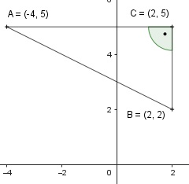

Pythagoras Aufgabe 26 Berechnen Sie die Fläche A des Dreiecks in cm2 und den Umfang U in cm.

AB = |-4| cm + 2 cm = 6 cm BC = 5 cm - 2 cm = 3 cm AC * BC 3 cm * 6 cm A = --------- = ------------- = 9 cm2 2 2 AC2 = AB2 + BC2 AC2 = 62 cm2 + 32 cm2 = 45 cm2 |√ AC = = 6,7 cm U = AB + BC * AC U = 6 cm + 3 cm + 6,7 cm = 15,7 cm